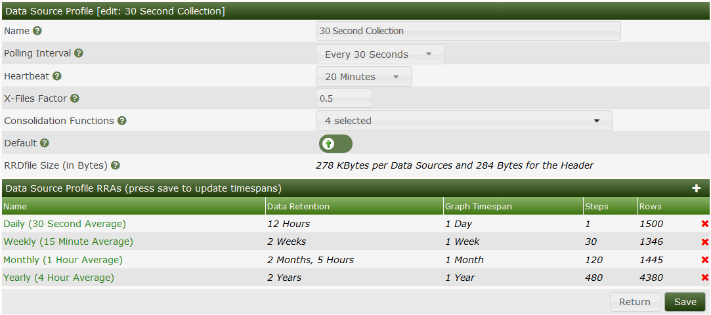
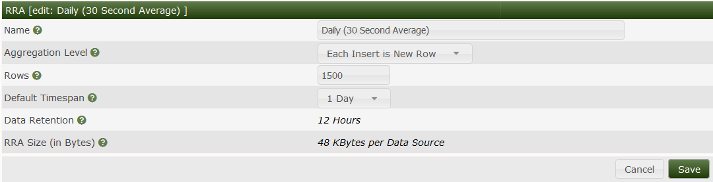

This section will describe Data Source Profiles in Cacti.

The following values are for the disk usage per Data source for the respective data profile
Daily 48kb
Weekly 43kb
Monthly 46kb
Yearly 140kb
Daily 93kb / data source
Weekly 45kb / data source
Monthly 47kb /datasource
Yearly 140KB/data source
Daily 19kb / data source
Weekly 22kb / data source
Monthly 25kb / data source
Yearly 26kb / data source

Copyright (c) 2004-2019 The Cacti Group